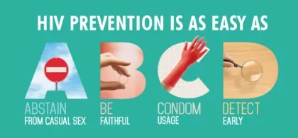
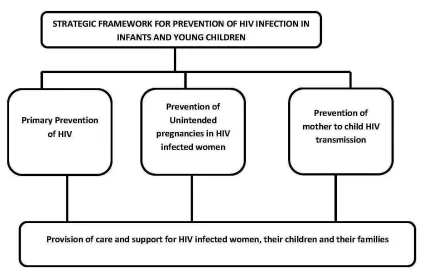

Expanded Nursing Uganda Explanation
Prevention and Control of HIV/AIDS links cause, transmission, prevention, assessment and treatment support. Good nursing notes should include infection prevention, danger signs, adherence support and community health education.
01 **Prevention in Pediatrics**
- ∙ Behavioral change and risk reduction interventions
- ∙ Biomedical prevention interventions
- ∙ Structural intervention
02 **BEHAVIORAL CHANGE AND RISK REDUCTION INTERVENTIONS**
The priority of behavioral interventions is to delay sexual debut ; reduce unsafe sex and multiple , especially concurrent sexual partnerships ; and discourage cross-generational and transactional sex.
Types of behavioral change
- ∙ Service delivery
- ∙ Risk assessment for client
- ∙ Provide socio-behavioral change Communication (SBCC) and link to services as appropriate ∙ Condom promotion and provision
Service delivery
The government of Uganda ensures that
1 . ⇒ Each health facility/program should have a focal person for HIV prevention
2. ⇒ All staff offering prevention services need to be trained
3. ⇒ Outreaches for key and priority populations
Risk assessment
4. ⇒ Offer HTS to sexually active adolescents, pregnant mothers who have not tested in the last 12 months or have had unprotected sex in last three months.
5. ⇒ HIV testing for infants born of HIV infected mothers.
6. ⇒ Assess sexual behavior of the in pregnant mothers and adolescents (ask if condoms are used, frequency, the number of partners, transactional sex/sex work) and if the client is involved in transactional sex/sex work encourage correct and consistent condom use.
Provide socio-behavioral change Communication (SBCC) and link to services as appropriate
7. ⇒ Discuss delay of onset of sexual debut in children and adolescents (abstinence) ⇒ Discuss correct and consistent condom use and offer condoms as appropriate to adolescents ⇒ Discourage multiple, concurrent sexual partnerships to promote faithfulness with a partner of known status.
8. ⇒ Discuss with the adolescents about sexual and reproductive health services and link to services as appropriate.
9. ⇒ Discourage risky cultural practices such as childhood marriages
10. ⇒ Identify, refer and link clients to other available facility and community programs
11. ⇒ Assess for violence, (physical, emotional, or sexual); if child discloses sexual violence, assess if the client was raped and act immediately
Condom promotion and provision
12. ⇒ Discuss condom use as an option for risk reduction in pregnant mothers and adolescent ∙ Discuss barriers to condom use to pregnant mothers and adolescent
13. ⇒ Clarify any questions and dispel myths around condoms
03 **Biomedical prevention interventions**
The key biomedical interventions include;
- ∙ EMTCT
- ∙ Safe male circumcision (SMC)
- ∙ ART
- ∙ PEP,
- ∙ PrEP
- ∙ Blood transfusion safety
- ∙ STI screening and treatment
Safe male circumcision (SMC)
- Male circumcision is the surgical removal of the foreskin of the penis. SMC reduces the risk of HIV acquisition among circumcised men (adolescents) by approximately 60%.
Blood transfusion safety
- Ensuring the screening of blood donors for HIV and hepatitis B
- Ensuring proper storage and administration
STI screening and treatment
- Integration of STI services in all health programs e.g. YCC, MCH.
EMTCT ( Elimination of Mother-to-Child Transmission of HIV)
- Measures of reducing the risk of HIV transmission to the child during pregnancy, labor, puerperium and breastfeeding.
- Post-exposure prophylaxis (PEP) is the short-term use of ARVs to reduce the likelihood of acquiring HIV infection after potential occupational or non-occupational exposure.
Types of exposure :
- ∙ Occupational exposures occur in the health care or laboratory setting and include sharps and needlestick injuries or splashes of body fluids to the skin and mucous membranes.
- Non-occupational exposures include unprotected sex, exposure following assault like in rape and defilement, and road traffic accidents.
Steps for providing Post Exposure Prophylaxis
Step 1: Clinical assessment and providing first aid
- Conduct a rapid assessment of the client to assess exposure and risk and provide immediate care. Occupational exposure:
After a needlestick or sharp injury
- ∙ Do not squeeze or rub the injury site
- ∙ Wash the site immediately with soap or mild disinfectant (chlorhexidine gluconate solution) ∙ Use antiseptic hand rub/gel if no running water
- ∙ Don’t use strong, irritating antiseptics (like bleach or iodine)
After a splash of blood or body fluids in contact with intact skin
- ∙ Wash the area immediately
- ∙ Use antiseptic hand rub/gel if no running water
- ∙ Don’t use strong, irritating antiseptics (like bleach or iodine)
Step 2: Eligibility assessment
Provide PEP when :
- ∙ Exposure occurred within the past 72 hours; and
- ∙ The exposed individual is not infected with HIV; and
- ∙ The ‘source’ is HIV-infected, has unknown HIV status or is high risk
Do not provide PEP when :
- ∙ The exposed individual is already HIV-positive
- ∙ The source is established to be HIV-negative
- ∙ Individual was exposed to bodily fluids that do not pose a significant risk (e.g. tears, non-blood stained saliva, urine, sweat)
- ∙ Exposed individual declines an HIV test
Step 3: Counseling and support
Counsel on :
- ∙ The risk of HIV from the exposure
- ∙ Risks and benefits of PEP
- ∙ Side effects of ARVs
- ∙ Enhanced adherence if PEP is prescribed
- ∙ Importance of linkage for further support for sexual assault cases
Step 4: Prescription
∙ PEP should be started as early as possible, not beyond 72 hours of exposure ∙ Recommended regimens include:
- ⇒ Pregnant mothers/adults: TDF+3TC+ATV/r
- ⇒ Children: ABC+3TC+LPV/r
∙ A complete course of PEP should run for 28 days
∙ Do not delay the first doses because of lack of baseline HIV test
∙ Document the event and patient management in the PEP register (ensure confidentiality of patient data)
Step 5: Provide follow-up
- ∙ Discontinue PEP after 28 days
- ∙ Perform follow-up HIV testing three months after exposure
- ∙ Counsel and link to HIV clinic for care and treatment if HIV-positive
- ∙ Provide prevention and education/risk reduction counseling if HIV-negative
PrEP is the use of ARV drugs by people who are not infected with HIV to block the acquisition of HIV .
The process of providing pre-exposure prophylaxis (PrEP)
- ∙ Eligibility for PrEP
- ∙ Screening for PrEP eligibility
- ∙ Steps to initiation of PrEP
- ∙ Follow-up/ monitoring clients on PrEP
- ∙ Guidance on discontinuing PrEP
Step 1: Eligibility for PrEP
PrEP provides an effective additional biomedical prevention option for HIV-negative people at substantial risk of acquiring HIV infection. These include people who:
- ∙ Have multiple sexual partners
- ∙ Engage in transactional sex including sex workers
- ∙ Use or abuse injectable drugs and alcohol
- ∙ Have had more than one episode of an STI within the last twelve months
- ∙ Are part of a discordant couple, especially if the HIV-positive partner is not on ART or has been on ART for less than six months
- ∙ Are recurrent users of PEP (3 consecutive cycles of PEP)
- ∙ Engage in anal sex
These risk factors are likely to be more prevalent in populations such as sex workers, fisher folk, long distance truck drivers, men who have sex with men (MSM), uniformed forces, and adolescents and young women engaged in transactional sex.
Step 2; Screening for PrEP eligibility
After meeting the eligibility criteria:
- ∙ Confirm HIV-negative status
- ∙ Rule out acute HIV infection
- ∙ Assess for hepatitis B infection: if negative, patient is eligible for PrEP; if positive, refer patient for management
- ∙ Assess for contraindications to TDF/FTC
Step 3: Steps to initiation of PrEP
- Provide risk-reduction and PrEP medication adherence counseling:
- ∙ Provide condoms and education on their use
- ∙ Initiate a medication adherence plan
- ∙ Prescribe a once-daily pill of TDF ( 300mg ) and FTC ( 200mg )
- ∙ Initially, provide a 1-month TDF/FTC prescription (1 tablet orally, daily) together with a 1-month follow-up date
- ∙ Counsel client on side effects of TDF/FTC
Step 4: Follow-up/ monitoring clients on PrEP
- ∙ After the initial visit, the patient should be given a two-month follow-up appointment and thereafter quarterly appointments
- ∙ Perform an HIV antibody test every three months
- ∙ For women, perform a pregnancy test based on clinical history
- ∙ Review the patient’s understanding of PrEP, any barriers to adherence, tolerance to the medication as well as any side effects
- ∙ Review the patient’s risk exposure profile and perform risk-reduction counseling ∙ Evaluate and support PrEP adherence at each clinic visit
- ∙ Evaluate the patient for any symptoms of STIs at every visit and treat as needed
Step 5: Guidance on discontinuing PrEP
- ∙ Acquisition of HIV infection
- ∙ Changed life situations resulting in lowered risk of HIV acquisition
- ∙ Intolerable toxicities and side effects
- ∙ Chronic non-adherence to the prescribed dosing regimen despite efforts to improve daily pill-taking ∙ Personal choice
- ∙ HIV-negative in a sero-discordant relationship when the positive partner has achieved sustained viral load suppression (condoms should still be used consistently.
04 **MOTHER-TO-CHILD TRANSMISSION OF HIV**
Approximately one-third of the women who are infected with HIV can pass it to their babies.
Elements of elimination of mother to child transmission
- ∙ : Primary prevention of HIV infection Women and men of reproductive age including adolescents
- ∙ : Prevention of unintended pregnancies among women living with HIV Women including adolescents living with HIV and their partners.
- ∙ : Prevention of HIV transmission from women living with HIV to their infants Pregnant and breastfeeding women including adolescents living with HIV
- ∙ : Provision of treatment, care, and support to women infected with HIV, their children and their families Women living with HIV and their families
Cause
Time of transmission;
- ∙ During pregnancy (15-20%)
- ∙ During time of labour and delivery (60%-70%)
- ∙ After delivery through breast feeding (15%-20%)
Pre-disposing factors
- ∙ High maternal viral load
- ∙ Depleted maternal immunity (e.g. very low CD4 count)
- ∙ Prolonged rupture of membranes
- ∙ Intra-partum haemorrhage and invasive obstetrical procedures
- ∙ If delivering twins, first twin is at higher risk of infection than second twin
- ∙ Premature baby is at higher risk than term baby
- ∙ Mixed feeding carries a higher risk than exclusive breastfeeding or use of replacement feeding
Investigations
- ∙ Blood: HIV serological test
- ∙ HIV -DNA/ PCR testing of babies.
Management
All HIV services for pregnant mothers are offered in the MCH clinic. After delivery, mother and baby will remain in the MCH postnatal clinic till HIV status of the child is confirmed, then they will be transferred to the general ART clinic.
The current policy aims at elimination of Mother-to-Child Transmission (eMTCT) through provision of a continuum of care with the following elements:
- ∙ Primary HIV prevention for men, women and adolescents
- ∙ Prevention of unintended pregnancies among women living with HIV
- ∙ Prevention of HIV transmission from women living with HIV to their infants
- ∙ Provision of treatment, care and support to ALL women infected with HIV, their children and their families
Management of HIV Positive Pregnant Mother
Key Interventions for eMTCT ;
- ∙ Routine HIV Counseling and Testing during ANC (at 1st contact. If negative, repeat HIV test in the third trimester/ labour.
- ∙ Enrolment in HIV care if mother is positive and not yet on treatment
- ∙ If mother already on ART, perform viral load and continue current regimen
- ∙ ART in pregnancy, labour and post-partum, and for life – Option B+
Treatment
Recommended ARV for option B+
- One daily Fixed Dose Combination (FDC) pill containing TDF + 3TC + EFV started early in pregnancy irrespective of the CD4 cell count and continue during labour and delivery, and for life, Alternative regimen for women who may not tolerate the recommended option are: ∙
- If TDF contraindicated: ABC+3TC+EFV
- If EFV contraindicated: TDF + 3TC + ATV/r
Prophylaxis for opportunistic infections
- Cotrimoxazole 960 mg 1 tab daily during pregnancy and postpartum
NB . Mothers on cotrimoxazole DO NOT NEED IPTp with SP for malaria
Notes
- ∙ TDF and EFV are safe to use in pregnancy
- ∙ Those newly diagnosed during labour will begin HAART for life after delivery
Caution
∙ In case of low body weight, high creatinine, diabetes, hypertension, chronic renal disease, and concomitant nephrotoxic medications: perform renal function investigations before starting TDF ∙ TDF is contraindicated in advanced chronic renal disease.
05 Nursing Uganda Clinical Lens
Use Prevention and Control of HIV/AIDS as a practical nursing topic, not only a memorized definition. Link cause, transmission, incubation, clinical features, treatment support and prevention.
- What to understand first: define prevention and control of hiv/aids, identify the normal or expected pattern, then explain what changes when the patient is unwell.
- Why it matters in care: the nurse must recognize risk early, explain findings clearly, document accurately and know when to escalate.
- How to revise it: connect each point to assessment, nursing diagnosis or care problem, intervention, rationale and evaluation.
06 Assessment Guide
- Temperature, pulse, respiratory status, hydration, pain, rash, wounds, stool, urine or sputum changes.
- Exposure history, travel, contacts, vaccination status and comorbidities.
- Specimen orders, isolation needs, antimicrobial history and danger signs.
07 Nursing Priorities, Rationales and Outcomes
- Use standard precautions and transmission-based precautions where needed.
- Support hydration, nutrition, medicines, monitoring and early referral for severe disease.
- Teach prevention, adherence, hygiene, safe water, vector control or contact tracing as relevant.
The rationale for these priorities is patient safety: nursing actions should prevent deterioration, reduce discomfort, support recovery and create clear evidence for the next caregiver.
- Expected outcome: Symptoms improve, complications are detected early, transmission risk is reduced and treatment is completed correctly.
08 Patient Teaching and Revision Check
- Explain prevention and control of hiv/aids in simple language the patient or caregiver can repeat back.
- Teach warning signs, medicine or follow-up instructions, hygiene or lifestyle points where relevant.
- For exams, prepare a short answer using: definition, causes or risk factors, signs, assessment, management, complications and prevention.
- For ward practice, document baseline findings, actions taken, patient response and the plan for review.
Illustrations and Diagrams (2)


Related Video Lectures
Watch nursing lecture videos on YouTube for this topic. Opens in a new tab.
Watch on YouTubeExternal link: YouTube may use its own cookies and terms. Nursing Uganda is not affiliated with YouTube.